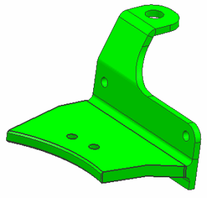
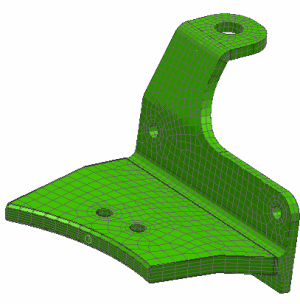
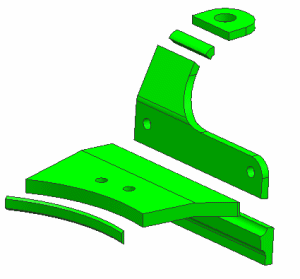
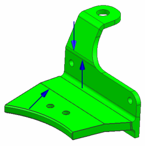
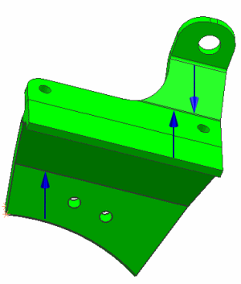
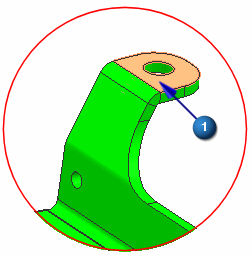

Swept meshing project
The following project shows how to prepare a part for swept meshing, then how to generate the swept mesh.
Objective
A steel bracket is shown below. Use the Split Body and 3D Swept Mesh commands to generate a hexahedral mesh on the model.

Required data
|
Property |
Value |
|
Part |
mid_2.prt |
|
Solution sequence |
Not applicable |
|
Idealization |
Split the body into smaller bodies that can be swept meshed |
|
Material |
Steel |
|
Mesh |
CHEXA8 Automatic element size |

Notes
A summary of the steps to generate the mesh is listed below.
For a detailed description of how to complete these steps, see the Generate a hexahedral (swept) mesh activity.
-
Open the part file and start Advanced Simulation. Create idealized part and FEM files.
-
Make the idealized part the displayed part.
-
Use the Promote command to promote the body.
-
Use the Split Body command to split the bracket into smaller bodies that can be used for swept meshing, as shown below.

Here are some ways that you can use the Split Body command:
-
Use the Extrude option to select an existing curve or sketch a new curve.
-
Use the New Plane option to create a new splitting plane.
-
Select the Check for Sweepable Body option to identify which bodies can be swept meshed.
-
-
Make the FEM file the displayed part.
-
Use the Merge Face command to combine adjacent polygon faces into a larger face before meshing. Select the edges to remove as shown below:

Select the following edges on the other side of the model:

-
Use the Mesh Mating Condition command to automatically generate mesh mating conditions.
-
Create a 3D mesh collector and define the material and the physical properties.
-
To mesh the model, use the 3D Swept Mesh command.
Select face
 as the source face.
as the source face.

Use the following settings:
-
Set element type to CHEXA8.
-
Select Automatic Element Size.
-
Select Attempt Free Mapped Meshing.
-
Select On - Zero Triangles.
-
Clear Automatic Creation and assign the mesh to the mesh collector you created.
-
-
Continue meshing the remaining bodies in the model. Be sure to use the Automatic Element Size option for each body. When you are finished, the mesh should look similar to this one:
Completed project
For your reference, a completed model for this project is located in the ..\projects\solved_project_models folder.